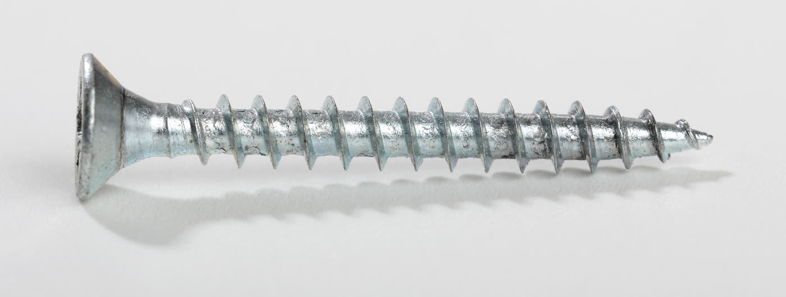
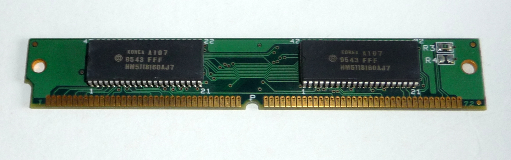
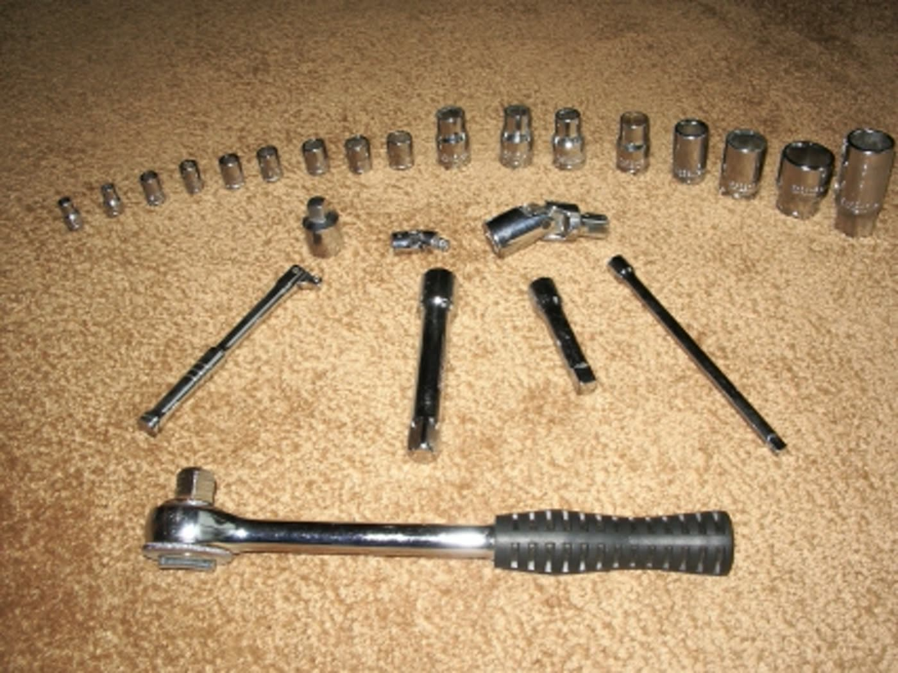

LINUX FROM ZERO
96
Lesson 96
/proc/modules is empty. nomodule is on the cmdline. Name virtio_blk anyway.
Loadable
modules
lsmod would format /proc/modules. That file is 0 bytes here.

This host
nomodule
The kernel booted with nomodule. /lib/modules does not exist.

Built-in
/sys/module
Pieces compiled into the kernel still show up as names under /sys/module.

Hold
virtio_blk
Last ls /sys/module/virtio_blk holds parameters and uevent.
Empty /proc/modules. Missing /lib/modules. Hold virtio_blk.